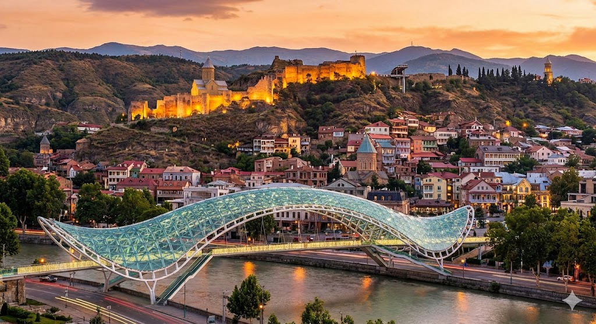

Tbilisi · tra vecchia e nuova Georgia
01 · Capitale
Tbilisi
Il punto da cui partire per iniziare a capire il Paese. Quartieri storici e architetture contemporanee convivono a pochi passi di distanza e le strade raccontano parte della sua storia. Da non perdere i bagni sulfurei: il nome Tbilisi è legato proprio alla parola georgiana tbili, “caldo”.